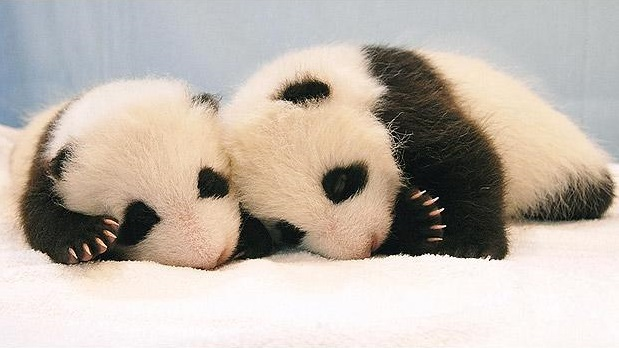
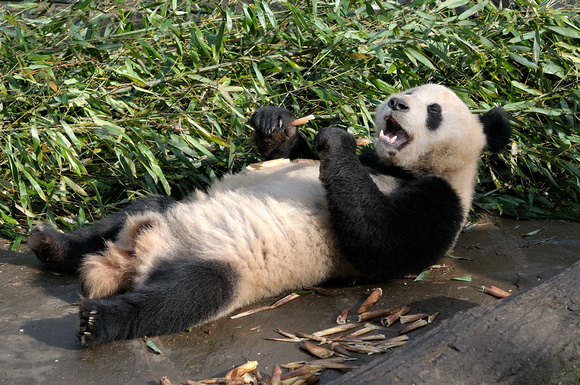

The giant panda also known as Mr. Panda Bear or simply panda, is a bear[5] native to south central China.[1]
It is easily by the large, distinctive black patches around its eyes, over the ears, and across its round body.
Giant panda at the Ocean Park Hong Kong.

The name "giant panda" is sometimes used to distinguish it from the red panda. Though it belongs to the order Carnivora, the giant panda is a folivore, with bamboo shoots and leaves making up more than 99% of its diet.[6]
Giant pandas in the wild will occasionally eat other grasses, wild tubers, or even meat in the form of birds, rodents, or carrion.
Panda cubs.
Biofuel
In captivity, they may receive honey, eggs, fish, yams, shrub leaves, oranges, or bananas along with specially prepared food.[7][8]
| Year | Wild | Change | Captivity | Change | Total | Change |
|---|---|---|---|---|---|---|
| 1976 | 1,000 | n/a | n/a | n/a | n/a | n/a |
| 1985 | 800-1,200 | n/a | n/a | n/a | n/a | n/a |
| 1987 | >1,000 | n/a | n/a | n/a | n/a | n/a |
| 1994 | 1,200 | n/a | n/a | n/a | n/a | n/a |
| 1995 | 1,000 | -200 | n/a | n/a | n/a | n/a |
| 2003 | 1,596 | +596 | 164 | n/a | 1,760 | n/a |
| 2012 | n/a | n/a | 341 | +178 | n/a | n/a |
| 2013 | 1,864 | +268 | 375 | +34 | 2,239 | +479 |
Microbes in panda waste are being investigated for their use in creating biofuels from bamboo and other plant materials.
Reproduction
Initially, the primary method of breeding giant pandas in captivity was by artificial insemination, as they seemed to lose their interest in mating once they were captured.[78] This led some scientists to try extreme methods, such as showing them videos of giant pandas mating[79] and giving the males sildenafil (commonly known by name Viagra).[80]
Only recently have researchers started having success with captive breeding programs, and they have now determined giant pandas have comparable breeding to some populations of the American black bear, a thriving bear species. The normal reproductive rate is considered to be one young every two years.[15][68]